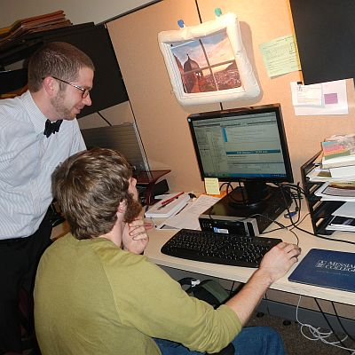
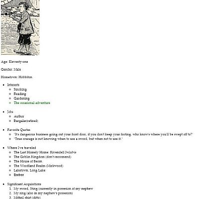
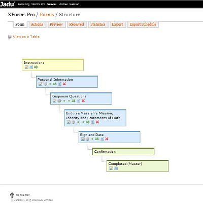
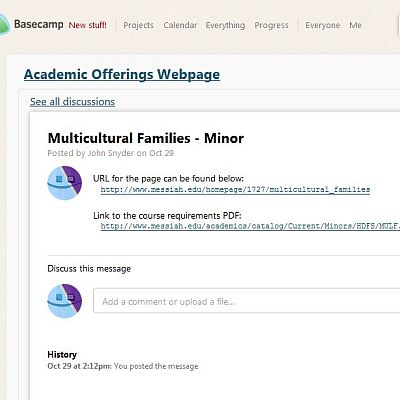
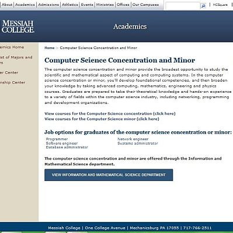

This picture was taken at the Tech Assistant workstation,
with Kris Hardy, one of my supervisors. It is located in the Work Study room,
and is is where I do all my work.

Much of what I did in the first weeks of my internship
was completing tutorials on websites like Codecademy.
In order to function as a Tech Assistant in a web development office,
I needed to brush up my knowledge of HTML and actually learn CSS.
I found that tutorials from Codecademy are very good for beginners,
and to the left is a screenshot of one of the lessons, in which I made a
"social networking" page for my favorite literary character.

One of my main tasks is to migrate pages from Messiah's
existing website to the content management system Jadu. This is a blank
wireframe for a page in the Philosophy department's website. In the beginning,
I was not asked to do any large projects, obviously, and so my work was mostly
made up of copy editing and building sites that would eventually get content.
As I grew more comfortable in my job, I was tasked with migrating entire
department websites.

I have had to make a number of special pages called Xforms
during my internship experience. Xforms are like normal HTML forms, except that they
have the capability to branch into different paths depending on selections that the
user makes. This eliminates the need of having unnecessary questions on a form; if the
form is meant for a diverse audience and not all questions will be relevant to everyone
filling it out, it can skip unecessary questions based on the information that the user
enters into the form. The example I have given does not have any branching paths, but
if it did, the structure would reflect the amount of choice paths the user could take.

Towards the end of October, 2013, we started using a project
management application called Basecamp to manage large projects. The big project for
November that I got to take part in was the creation of new academic offerings pages.
My first task was to build almost eighty wireframes for many concentrations and minors
that the college offers, and locate the course requirement information for each one.
For each of these, I was asked to make a discussion thread in Basecamp and post the
links to the wireframe website and the course requirement PDF, which the staff writers
could use as a place to post the content that was to go in the new page.

Here is an example of a finished academic offerings page.